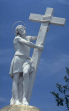
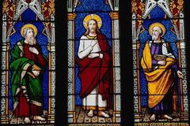

| Христианство http://schools.keldysh.ru/school1413/religija/christ.htm |
|  |  |
| Христианство - самая многочисленная религия в мире. По данным энциклопедии “Народы и религии мира” (М..1998, с.860), в мире в 1996 году было около 2 миллиардов христиан. Христианство возникло в Палестине в середине I в. н.э. Первые христиане по национальности были евреями, по прошлому религиозному мировоззрению - иудеями. Но уже во второй половине I века христианство стало интернациональной религией. Языком интернационального общения у первоначальных христиан стал греческий язык (как и в государстве того времени). С точки зрения служителей культа, главной и единственной причиной возникновения христианства была проповедническая деятельность Иисуса Христа, который был одновременно и Богом, и человеком. Иисус Христос, говорят служители культа, в образе человека пришёл на землю и принёс людям истину. О его пришествии на землю (это состоявшееся пришествие называют первым, в отличие от второго, будущего) рассказывается в четырёх священных книгах, которые называются Евангелиями.
С точки зрения историков-материалистов, главной причиной возникновения христианства были тяжелые условия жизни народных масс, которые в новой религии искали для себя утешение. В то же время современные историки не отрицают того, что существовал Христос-проповедник (но не Бог) и что его проповедническая деятельность была одним из факторов формирования новой религии. Служители культа говорят, что Евангелия написали два апостола Иисуса Христа Матфей и Иоанн) и два ученика двух других апостолов: Петра - Марк и Павла - Лука. Евангелия рассказывают, что во времена, когда Иудеей правил царь Ирод женщина по имени Мария в городе Вифлееме родила мальчика, которого она и её муж назвали Иисусом. Когда Иисус вырос, он стал проповедовать новое религиозное учение, главными идеями которого были следующие. Во-первых, надо верить, что он Иисус является Христом (греческое слово Христос означает то же, что и еврейское Мессия). И, во-вторых, надо верить, что он Иисус - сын Божий. Наряду с этими двумя, наиболее часто повторяющимися в его проповедях идеями он пропагандировал и многие другие: о своём будущем втором пришествии, о воскрешении мёртвых тел при конце света, о существовании ангелов, бесов и др. В его проповеди значительное место занимали нравственные идеи: о необходимости любить ближних, помогать попавшим в беду и т.д. Свои поучения он сопровождал чудесами, которые доказывали его божественное происхождение. В частности он совершил следующие чудеса: исцелил словом или прикосновением великое множество больных, трижды воскрешал мертвых, превратил один раз воду в вино, ходил по воде как по сухому месту, пятью хлебными лепешками и двумя небольшими рыбами накормил пять тысяч человек и др. Особенно важную роль в Евангелиях играет рассказ о последних днях жизни Иисуса Христа. Этот рассказ начинается эпизодом въезда его в Иерусалим. Его встречало множество народу, ибо Иисус прославился своими многочисленными чудесами.. Люди постилали на дороге, по которой ехал Иисус Христос свои одежды и пальмовые ветви и кричали ему “Осанна!”. Слово “осанна” в буквальном переводе с еврейского означает “спасение” (пожелание спасения Иисусу), но по смыслу это приветствие типа “Слава”). Одним из важных событий в жизни Иисуса Христа после его въезда в Иерусалим было изгнание торговцев из Иерусалимского храма. Ситуация изгнания торгующих из храма стала символом удаления непорядочных людей из всех святых и благородных дел. Иисус въехал в Иерусалим в первый день недели (так в Евангелиях называется воскресенье), а в пятый день недели (т.е. в четверг) состоялся прощальный пасхальный ужин (праздновалась иудейская пасха) Иисуса Христа с апостолами. Впоследствии христианские служители культа этот ужин назвали “тайной вечерей”. Во время тайной вечери ученики Христа ели хлеб и пили вино, которые он им подал. После пасхального ужина Иисус Христос и его ученики (за исключением одного из них, Иуды Искариота, который покинул ужин раньше) пришли сначала на гору Елеонскую, а затем в Гефсиманский сад. Там в саду в ночь с четверга на пятницу римские солдаты при помощи Иуды Искариота арестовали Иисуса Христа. Арестованного отвели в дом первосвященника. Церковный суд обвинил его в богохульстве, и в посягательстве на царский престол (это посягательство видели в том, что он называл себя “царём иудейским”). Иисуса Христа приговорили к смерти. В пятницу римские солдаты, которые по законам того времени исполняли смертные приговоры церковного суда, распяли его на кресте, и он умер. Рано утром в первый день недели Иисус Христос воскрес, а через некоторое время вознёсся на небо. Расположенная в Библии вслед за Евангелиями книга “Деяния апостолов” уточняет, что вознесение на небо произошло на 40-й день после его воскресения. Таково основное содержание евангельских повествований об Иисусе Христе. В оценке истинности евангельских рассказов люди расходятся. Одни считают, что всё, что написано в Евангелиях, имело место в действительности. Другие, напротив, полагают, что в Евангелиях быль перемешана с художественным вымыслом. В формировании конкретных особенностей новой религии, по мнению историков, сыграли свою роль и некоторые другие социальные обстоятельства. Существование императорской власти содействовало выработке и закреплению представления об едином Боге на небе. Усиление экономического, политического и идейного общения между народами (в результате образования Римской империи) формировало и закрепляло представление об интернациональном Боге, который заботится о всех людях, независимо от их национальности. Кризис рабовладельческого общества привёл верхи общества к разочарованию в старых религиях, к потере веры в богов, которые не смогли предотвратить ухудшения положения правящих классов. И на вновь возникшую религию многие из представителей правящих классов возлагали надежды как на могучую силу, которая может их поддержать. Если сравнить христианскую религию с религиями и философскими учениями, которые уже существовали в Римской империи, то в ряде случаев можно увидеть нечто общее. Историки считают, что эти общие моменты говорят о том, что у христианской религии были идейные источники. Наиболее важным из них является иудаизм. Христианство возникло как ответвление от иудаизма. Священную книгу иудеев Танах христиане считают и своей священной книгой, но называют её иначе: Ветхим Заветом. Ветхий Завет христиане дополнили Новым Заветом, а вместе они составили Библию. Из иудейской религии христиане приняли идею Мессии. Само слово Христос есть не что иное как перевод еврейского слова Мессия на греческий язык. Ряд положений, вошедших потом в систему христианских религиозных и нравственных взглядов, высказал александрийский философ Филон: о прирождённой греховности людей, об аскетизме и страданиях как о средствах спасения души, о том, что Мессия - тоже Бог и что его имя - Логос (это имя в христианстве стало вторым именем Христа, в переводе с греческого на русский Логос - это Слово). У римлянина Сенеки христиане позаимствовали этические идеи о равенстве всех людей перед Богом, о спасении души как цели жизни, о презрении к земной жизни, о любви к врагам, о покорности судьбе. Кумранская община (в прошлом - конфессия в иудаизме) пропагандировала идеи об уже состоявшемся первом пришествии Мессии и ожидаемом втором, о наличии у Мессии человеческой природы. Эти идеи также вошли в христианство. В I в.н.э. на территории Римской империи существовало много национальных религий. К концу V в. эти религии или отступили на второй план (как, например, иудаизм), или сошли с исторической сцены (древнегреческая религия). Христианство же, напротив, из небольшого религиозного движения превратилось в главную, наиболее многочисленную религию в империи. По мнению историков, победа христианства над другими религиями объясняется следующими его особенностями. Во-первых, его монотеизмом . Все остальные религии в империи, кроме христианства и иудаизма, были политеистическими. В условиях империи монотеизм выглядел более привлекательно. Во-вторых, его гуманистическим нравственным содержанием. Конечно, определённые гуманные нравственные идеи были и в других религиях того времени. Но в христианстве они были выражены более полно и более ярко, поскольку основными авторами этой религии (по мнению историков) были трудящиеся; а для тружеников труд и быт без взаимоуважения и взаимопомощи были просто невозможны. В-третьих, картина загробной жизни в христианстве выглядела для низов общества более привлекательно, чем в любой другой религии. Христианство обещало небесную награду в первую очередь и главным образом всем страдающим в этой жизни, всем униженным и оскорблённым. В-четвёртых, только христианство отказалось от национальных перегородок, пообещав спасение всем, независимо от национальной принадлежности. В-пятых, обряды в существовавших тогда религиях были сложными и дорогостоящими, а христианство упростило и удешевило обряды. В-шестых, только христианство критиковало рабство тем, что признавало раба, равным перед Богом со всеми другими людьми. В целом христианство лучше других религий приспособилось к новым историческим условиям. Христианская религия прошла два больших этапа и находится сейчас на третьем этапе своей истории. Христианство первого этапа (I-V вв.) историки называют античным христианством, второго этапа (VI-XV вв.) - средневековым христианством, третьего этапа (XVI в. - по настоящее время) - буржуазным христианством. В буржуазном христианстве выделяется особая часть этапа, которую называют современным христианством (вторая половина ХХ века). Вероучение официального античного христианства сложилось к концу V века. Оно опиралось на Библию и решения Вселенских соборов и было изложено в трудах видных богословов IV и V веков (их, как и знаменитых богословов последующего времени, называют “отцами церкви”). Вероучение официального античного христианства было воспринято полностью или частично всеми возникшими впоследствии христианскими конфессиями, но каждая из конфессий дополнила вероучение античных христиан какими-либо своими специфическими религиозными учениями. Эти специфические дополнения главным образом и отличают одну конфессию от другой. Главным автором Библии является Бог. Ему помогали люди: около 40 человек. Бог создавал Библию через людей: он внушал им, что именно надо писать. Библия - книга боговдохновенная. Её называют также Священным Писанием и Словом Божиим. Все книги Библии делятся на две части. Книги первой части, вместе взятые называются Ветхим Заветом, второй части - Новым Заветом. В Новый Завет античные христиане включили 27 книг. Одни конфессии в современном христианстве включают в Ветхий Завет 39 книг (например, лютеранство), другие - 47 (например, католицизм), третьи -50 (например, православие) Поэтому и полное количество книг в Библии в разных конфессиях разное: 66, 74 и 77. Согласно вероучению официального античного христианства, в мире существуют три группы сверхъестественных существ: Троица, ангелы и бесы. Главная идея учения о Троице состоит в утверждении, что один Бог существует сразу же в трёх лицах (ипостасях) как Бог-Отец, Бог-Сын и Бог-Дух Святой. Все лица Троицы могут явиться людям и в телах физических, материальных. Так, на католических и православных иконах (а католики и православные унаследовали учение о Троице от античных христиан) Троица изображается следующим образом: первое лицо в образе человека, второе лицо - тоже в образе человека, а третье лицо - в образе голубя. Все лица Троицы обладают всеми совершенными качествами: вечностью, всемогуществом, вездесущностью, всеведением, всеблагостью и другими. Бог-Отец сотворил мир при участии двух других лиц Троицы, а формы этого участия являются тайной для человеческого разума. Христианское богословие считает учение о Троице одним из самых непостижимых для человеческого разума. В античном христианстве верующие должны были почитать пророков. Пророками назывались люди, которым Бог дал задание и возможности возвещать людям истину. А истина, которую они возвещали, имела две основные части: истина о правильной религии и истина о правильной жизни . В истине о правильной религии особо важным элементом был рассказ о том, что ждёт людей в будущем. Христиане, как и иудеи, почитали всех пророков, упоминаемых в Танахе (Ветхом Завете), но в дополнение к ним они почитали и пророков Нового Завета: Иоанна Крестителя и Иоанна Богослова. Почитание пророков, как и в иудаизме, выражалось у них в форме уважительного разговора о пророках в проповедях и в быту. Но никакого особого ритуального почитания Ильи и Моисея у античных христиан, в отличие от иудеев, не было. Античные христиане дополнили почитание пророков почитанием апостолов и евангелистов (авторов Евангелий). Причём два евангелиста (Матфей и Иоанн) были одновременно и апостолами. Иоанн, к тому же, по взглядам античных христиан, считался одновременно и пророком. Главной идеей учения о загробной жизни в христианстве является идея о существовании рая и ада. Рай - это место блаженства, ад - место мучений. Слово “рай” взято из персидского языка. В первом, буквальном значении оно означало “богатство”, “счастье”. Слово “ад” взято из греческого языка (по-гречески оно звучит как “адэс”) и в первом, буквальном значении означало “невидимое”. Этим словом древние греки назвали царство мёртвых. Поскольку, по их представлениям, это царство находилось под землёй, постольку слово “адэс” во втором значении стало означать “подземное царство”. Античные христиане считали, что рай находится на небе (отсюда синонимом рая стало выражение “царство небесное”), а ад - во внутренностях земли. Современные христианские служители культа добавляют к этому, что и рай, и ад находятся в особом сверхъестественном пространстве: они недоступны людям при земной жизни. В литературе обычно пишут, что, по христианскому учению, Бог праведников направляет в рай, а грешников - в ад. Строго говоря, по христианскому учению, из-за первородного греха Адама и Евы грешниками являются все люди (за исключением Марии, матери Иисуса Христа). Поэтому, по представлениям христиан, праведники - это не противоположность грешникам, а их особая часть. Поскольку праведники отличаются друг от друга по степени праведности, а закоренелые грешники отличаются друг от друга по глубине греховности, то и участь всех праведников (в степени и формах блаженства) и всех грешников (в степени и формах мучений) не одинаковы. По канонам христианства загробная жизнь имеет два этапа. Первый: от смерти тела до второго пришествия Иисуса Христа. Второй этап начнётся со вторым пришествием Иисуса Христа, а конца он не имеет. На первом этапе в раю и аду находятся только души людей, на втором души соединятся с воскресшими телами. Ад на обоих этапах находится на одном и том же месте, а рай на втором этапе переместится с неба на землю. Античной христианство было колыбелью главной мировой религии нашего времени. В дальнейшем своем развитии христианство разделилось на множество конфессий, но каждая из них опирается на наследство, полученное от античного христианства. |